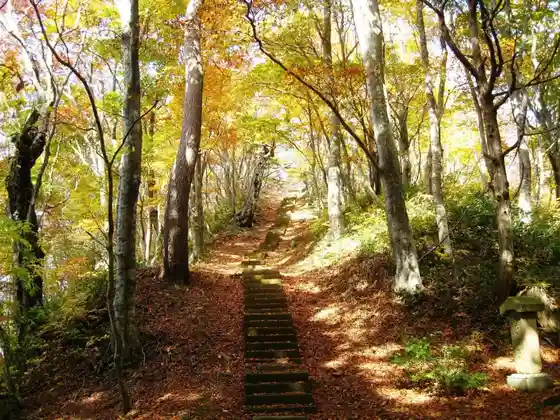
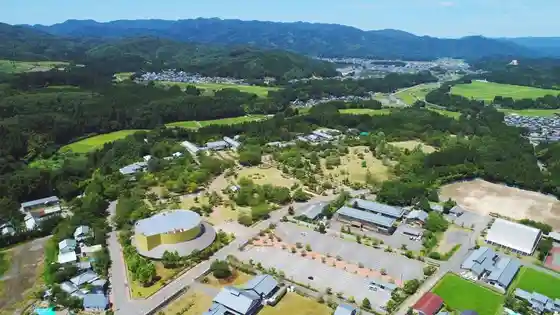
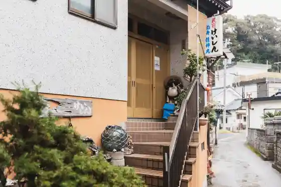

Echizencho Suisen Gunsei Chi
Echizencho, Fukui · 0778-37-1234 · Official / source link
Ochi Shrine
Echizencho, Fukui · 0778-34-5260 · Official / source link

Echizencho Togei Village
Echizencho, Fukui · 0778-32-2174 · Official / source link

Echizencho Gani Museum
Echizencho, Fukui · 0778-37-2626 · Official / source link
Minshuku Keishin
Echizencho, Fukui · 0778-37-1140 · Official / source link

Roadside Station Echizencho
Echizencho, Fukui · 0778-37-2360 · Official / source link
Echizencho Ni no Miya Tsurugi Shrine (Tsurugi Shrine)
Echizencho, Fukui · 0778-36-0404 · Official / source link
Echizencho Misaki Suisen Land
Echizencho, Fukui · 0778-37-2501 · Official / source link
Ko Tori Mon
Echizencho, Fukui · 0778-37-1234 · Official / source link
Ryori Yado Yamazaki
Echizencho, Fukui · 0778-37-1016 · Official / source link
Yukyu Roman no Mori FOREST CAMP BASE
Echizencho, Fukui · 0778-36-2050 · Official / source link
Echizencho Misaki
Echizencho, Fukui · 0778-37-1234 · Official / source link
Echizencho Onsen Rotemburo Isaribi
Echizencho, Fukui · 0778-37-2360 · Official / source link
Fukui Sogo Botanical Garden Purantopia
Echizencho, Fukui · 0778-34-1120 · Official / source link
Ryokan Hamayu
Echizencho, Fukui · 0778-39-1230 · Official / source link
Echizencho Zu Onsen Araki
Echizencho, Fukui · 0778-37-1421 · Official / source link
Echizencho Umi no Ie Minshuku Shinano
Echizencho, Fukui · 0778-37-1176 · Official / source link
ECHIZEN Rogobujie
Echizencho, Fukui · Official / source link
Fukuiken Togei Kan
Echizencho, Fukui · 0778-32-2174 · Official / source link
Echizencho Ito Nama Onsen Taicho no Mori
Echizencho, Fukui · 0778-34-2322 · Official / source link
Ryokan Jinpei
Echizencho, Fukui · 0778-37-0243 · Official / source link
Cho Su Hama Beach (Echizencho)
Echizencho, Fukui · 0778-37-1234 · Official / source link
Hagino Shogakko Kyu Matsu Bunko Ato
Echizencho, Fukui · Official / source link
Mobara Jinko Beach (Echizencho)
Echizencho, Fukui · Official / source link
Ryokan Hama Tomi
Echizencho, Fukui · 0778-39-1003 · Official / source link
Echizencho Togei Village Bunka Koryu Hall
Echizencho, Fukui · 0778-32-3200 · Official / source link
Echizencho Yaki no Kan
Echizencho, Fukui · 0778-32-2199 · Official / source link
Furusato no Yado Kobase
Echizencho, Fukui · 0778-37-0018 · Official / source link
Minshuku Nakade
Echizencho, Fukui · 0778-37-1045 · Official / source link
Echizencho Onsen Rotemburo (Nihonkai)
Echizencho, Fukui · 0778-39-1126 · Official / source link
Nashigataira Senmaida Suisen Sono (Echizencho Suisen Gunsei Chi)
Echizencho, Fukui · 0778-37-1234 · Official / source link
Echizencho Oda Bunka Rekishikan
Echizencho, Fukui · 0778-36-2288 · Official / source link
Echizencho Asahi no Himawari Hatake
Echizencho, Fukui · Official / source link
Omoidena farm
Echizencho, Fukui · 0778-32-3545 · Official / source link
Tamagawa Dokutsu Kannon
Echizencho, Fukui · 0778-37-0194 · Official / source link
Echizencho Togei Village Hana Mizuki Onsen Wakatake So
Echizencho, Fukui · 0778-32-2753 · Official / source link
Roadside Station Echizencho Nai (Echizencho Tourist Information) (Echizencho Kanko Renmei)
Echizencho, Fukui · 0778-37-1234 · Official / source link
Sengahama Beach (Echizencho)
Echizencho, Fukui · 0778-37-1234 · Official / source link
Kome no Beach (Echizencho)
Echizencho, Fukui · 0778-37-1234 · Official / source link
Echizencho Koyo Museum
Echizencho, Fukui · 0778-32-2174 · Official / source link
Shirahama Beach (Echizencho)
Echizencho, Fukui · 0778-37-1234 · Official / source link
Kabeishi Hama Beach (Echizencho)
Echizencho, Fukui · 0778-37-1234 · Official / source link
Jinmeigatani Sue Utsuwa Kamato
Echizencho, Fukui · 0778-37-1234 · Official / source link
Kuriya Ohama Beach (Echizencho)
Echizencho, Fukui · 0778-37-1234 · Official / source link
Umeura Beach (Echizencho)
Echizencho, Fukui · 0778-37-1234 · Official / source link
Tamagawa Beach (Echizencho)
Echizencho, Fukui · 0778-37-1234 · Official / source link
Roadside Station Park In Tanjogaoka
Echizencho, Fukui · 0778-34-2850 · Official / source link
Semimaru no Haka
Echizencho, Fukui · Official / source link
Michi Kuchi Beach (Echizencho)
Echizencho, Fukui · 0778-37-1234 · Official / source link
Kowaka Ongyoku Hassho no Chi Kinenhi
Echizencho, Fukui · Official / source link
Tori Fun Iwa
Echizencho, Fukui · 0778-37-1234 · Official / source link
Shiroyama
Echizencho, Fukui · 0778-37-1234 · Official / source link
Mobara Beach (Echizencho)
Echizencho, Fukui · 0778-37-1234 · Official / source link
Echizencho Ei Kyugijo Yoko no Sakura Namiki
Echizencho, Fukui · Official / source link
Echizencho Town Hall
Echizencho, Fukui · 0778-34-1234 · Official / source link